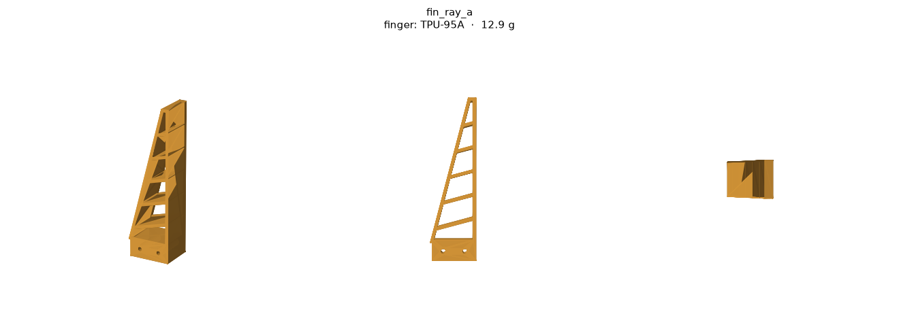
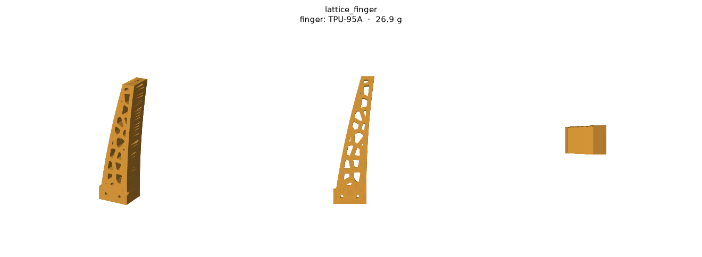
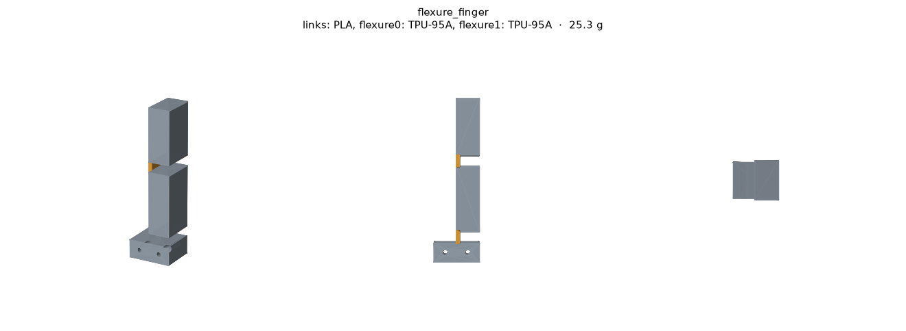
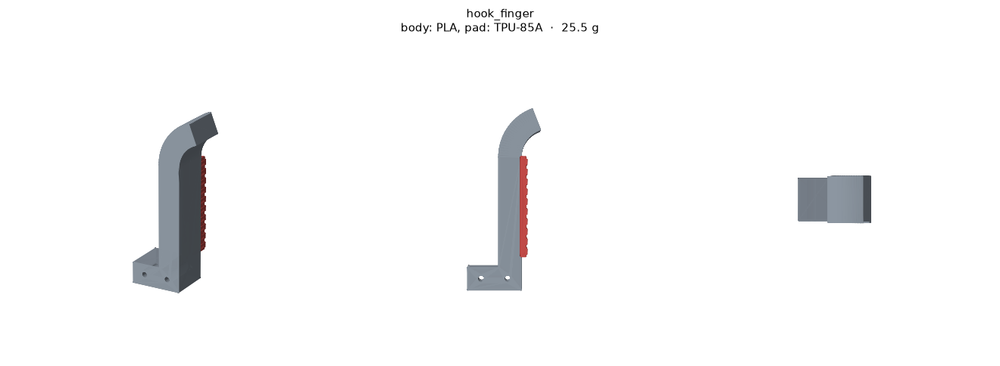

Lab meeting · Milestone M0
Zero Gripper: which simulator, and can search beat the Fin-Ray?
Haonan Chen · October 29, 2026 · simulation results, not yet on the bench
Bottom line: 2D FEM is the simulator, and search found a finger whose tip curls in.
Today
Three questions, with the answers up front
1
Which simulator can score soft fingers?
→ 2D finite elements. The 3D options are too stiff or too slow.
2
Does a Fin-Ray’s tip curl around objects?
→ No. In every model, the tip moves away.
3
Can a search find a finger that does?
→ Yes, in 264 tries, for contacts low on the face.
Takeaway: the rest of the talk is the evidence for these three answers.
Background · the project
An AI agent designs the gripper; simulation scores it
1
servo drives everything (Dynamixel XM430)
300
candidate designs scored per generation
3
printable materials: PLA, TPU, silicone
4
robot arms for real tests: YAM, ARX, Franka, UR5
The agent writes CAD code for every part. A search loop keeps the best and most diverse designs, then tunes each one’s dimensions.
Takeaway: every design is judged in simulation, so the simulator decides everything.
Background · the test parts
Seven test parts, all generated from code

Fin-Ray, in three variants

Lattice finger

Flexure finger

Hook finger, plus a rigid baseline
Takeaway: the test parts use the same CAD code the AI agent will write later.
Question 1 of 3 · Which simulator?
3D soft-body simulators make TPU far too stiff
4.5–6.4×
too stiff: MuJoCo on a Fin-Ray finger
1.2%
error: 2D finite elements
Takeaway: a too-stiff simulator would punish exactly the soft designs we want.
Question 1 of 3 · Which simulator?
Only 2D finite elements are accurate and fast
| Simulator | Accurate? | Time per design | Use it for |
|---|
| MuJoCo soft body (CPU) | No: 4–6× too stiff | ~3 hours | Nothing |
| Genesis (RTX 5090) | No: 15–35% too stiff | ≥9 minutes | Nothing |
| 2D, small deformation | Yes: 1.2% error | 0.1 seconds | The search |
| 2D, large deformation | Yes: matches | ~1 minute | Checking finalists |
≈100,000×
faster per design: 2D model vs MuJoCo soft body
30 s
to score a whole generation of 300 designs in 2D
Takeaway: 2D FEM is fast enough for the search loop; 3D options are not.
Question 1 of 3 · Which simulator?
Decided: soft parts are flat, extruded shapes
Soft parts: 2D outlines with a thickness
Like almost every compliant finger in the literature. Rigid parts stay 3D.
Keep large-deformation behavior
So the search can reward fingers that stay soft, then stiffen as ribs touch.
Fingers need not match
The agent may pair different fingers, like a hook against a pad.
Budget: under 1 hour per generation
300 designs on one 64-core machine. Today’s estimate is ~1 day.
Takeaway: going 2D buys an accurate simulator; the open problem is speed.
Question 2 of 3 · Does a Fin-Ray curl?
The Fin-Ray promise: press it, and the tip curls in
We score every finger with one number:
tip movement ÷ push depth
Below 0: the tip curls toward the object. This is the Fin-Ray effect.
Above 0: the tip moves away from the object.
Takeaway: one number per finger: below zero means the tip wraps the object.
Question 2 of 3 · Does a Fin-Ray curl?
A standard Fin-Ray’s tip moves away instead
+0.4
tip ÷ push: the tip moves away
6 mm
tip moves away at a 15 mm push
3
simulators agree, with or without friction
0/408
grid-sweep Fin-Ray shapes curl in
Takeaway: every model agrees: a standard Fin-Ray’s tip never curls in.
Question 3 of 3 · Can search find curl?
We let an optimizer redesign the finger’s outline and ribs
264
designs tried before the first success
4 s
of computing on one workstation
−0.21
tip ÷ push: the tip curls in
Takeaway: a free-form search found what the 408-shape grid could not.
Question 3 of 3 · Can search find curl?
The trick: a steep strut that levers the tip in
Shape: a thick rib runs from low on the front up to the back.
How: the stiff top triangle pivots and swings the tip in.
Limit: pushed above the strut, the tip moves away again.
Takeaway: pushing low on the face pivots the top of the finger, so the tip swings in.
Question 3 of 3 · Can search find curl?
Large-deformation check: it holds when pushed low
9.1 mm
toward the object, pushed at 30% height
4.5×
stiffer than the standard Fin-Ray
Takeaway: it curls hard when pushed low, but not at mid-height, and it is too stiff.
Question 3 of 3 · Can search find curl?
Second search: curl reaches mid-height, softer
16.9 mm
tip toward the object, pushed at 30%
1.3–1.9×
the Fin-Ray’s force (was 4.5×)
Takeaway: scoring more of the face and stiffness gave a finger that curls almost everywhere.
Summary
Three answers, all from simulation so far
| Question | Answer | Bench test |
|---|
| 1. Which simulator? | 2D FEM: fast for search, large-deformation for checks | Compare push curves |
| 2. Does a Fin-Ray curl? | No: its tip moves away (+0.4) | Print fin_ray_a |
| 3. Can search find curl? | Yes: up to mid-height, near Fin-Ray stiffness | Print the best design |
Takeaway: two prints on the bench decide how far we can trust the simulator.
Next, and questions for you
Next two weeks, and where I’d like help
Next
- Print the Fin-Ray and the best searched finger in TPU; film a push.
- Search more of the finger: curl up to 70% height.
- Make the large-deformation simulation 25× cheaper.
Questions for the lab
- Has anyone seen a printed Fin-Ray tip curl in?
- Would reviewers reject “2D soft parts only”?
- Which force sensor and motion capture can I borrow?
Takeaway: if the prints match the simulator, M0 is done and the agent loop starts.